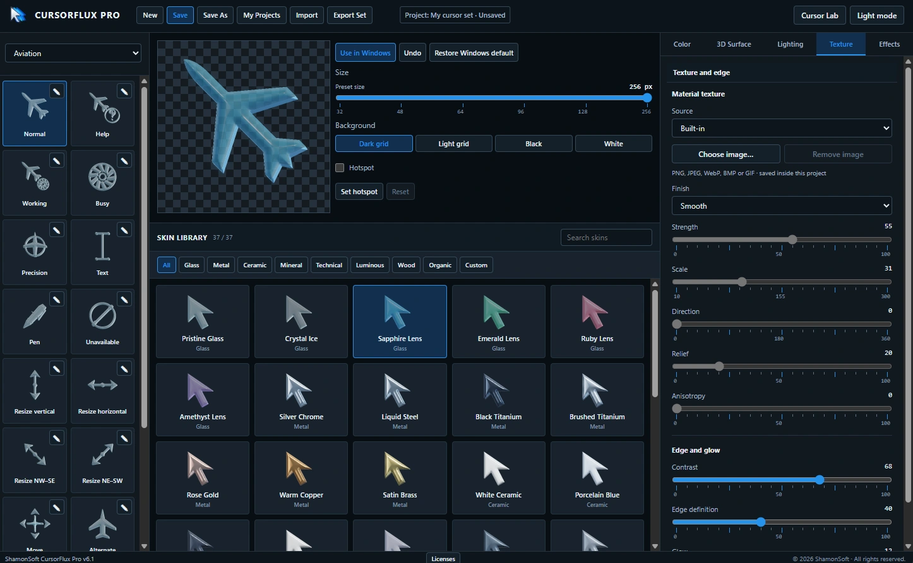
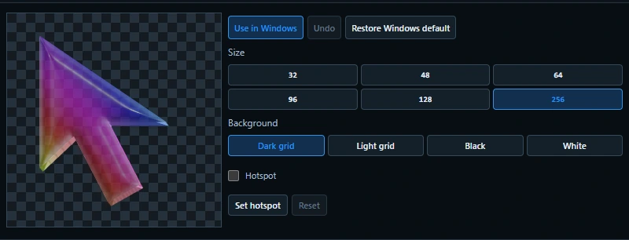
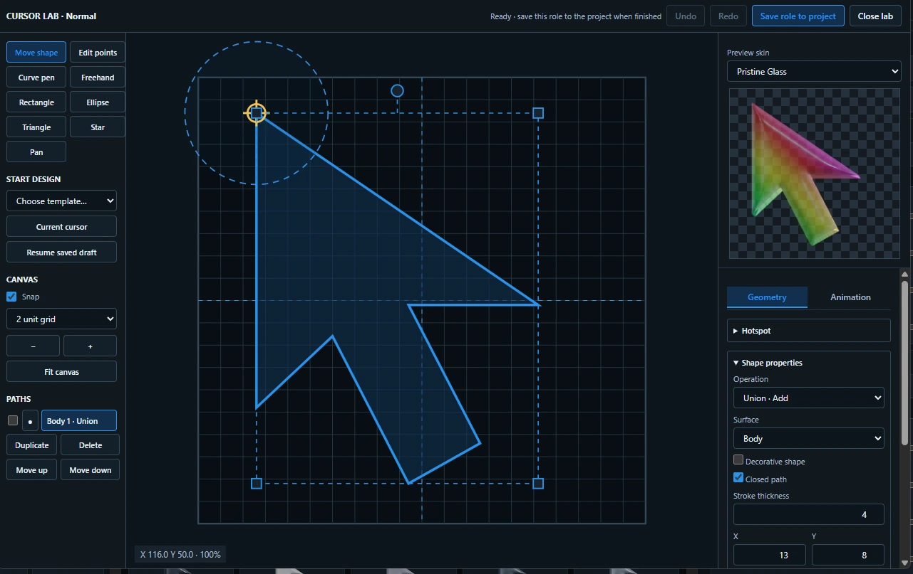
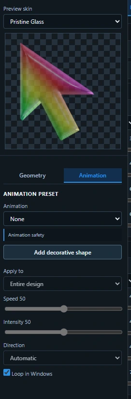

Build complete cursor sets from your own ideas.
CursorFlux Pro gives you a dedicated workspace for designing and customizing Windows cursors with control over shapes, materials, colors, visual effects and animation. Start with existing designs or build your own from the ground up in Cursor Lab, then export the finished set for Windows.
Start with a theme, customize individual cursor roles, and leave the remaining roles on the selected theme until you are ready to change them.

Design the whole Windows cursor family.
Work through the standard Windows cursor roles in one place, including Normal, Help, Working, Busy, Precision, Text, Pen, resize cursors, Move, Alternate and more. Choose a theme or family, then customize each cursor so the entire set feels consistent.

Take control of nearly every part of the cursor appearance.
Choose a skin, then refine color, transparency, 3D depth, bevel, thickness, lighting, texture and effects. Material controls include reflection, refraction, roughness, clearcoat and edge lighting, while RGB behavior, trails, click effects, fluid ribbons and cursor aura add movement and personality.

See exactly how the cursor will look before you use it.
Preview each cursor at multiple sizes, switch between different backgrounds to check visibility, set the hotspot precisely, and apply the result directly to Windows when you are ready. You can also restore the Windows default at any time.


Build cursor shapes from the ground up.
Create and edit cursor geometry directly on the canvas using shapes, freehand drawing, curves and point editing. Move, resize and combine paths, set the hotspot, preview the design with any skin, then add animation presets, decorative shapes and loop behavior before saving the role back to the project.


See CursorFlux Pro in action.
Watch a guided tour of cursor creation, skins, effects, animation, live preview and Windows cursor-set export.
Watch on YouTube